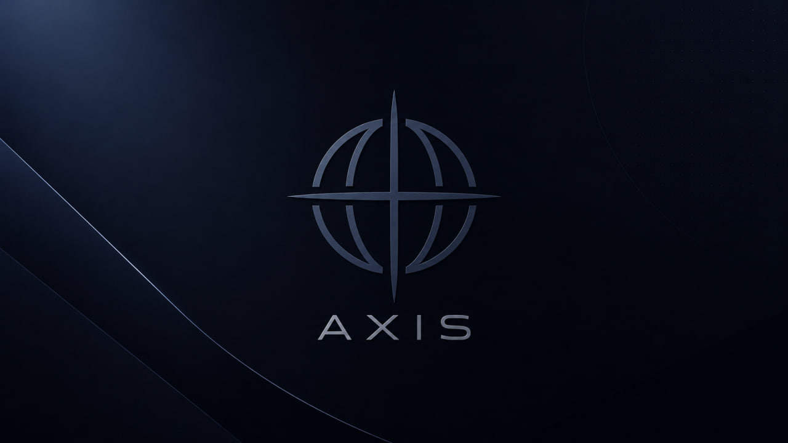
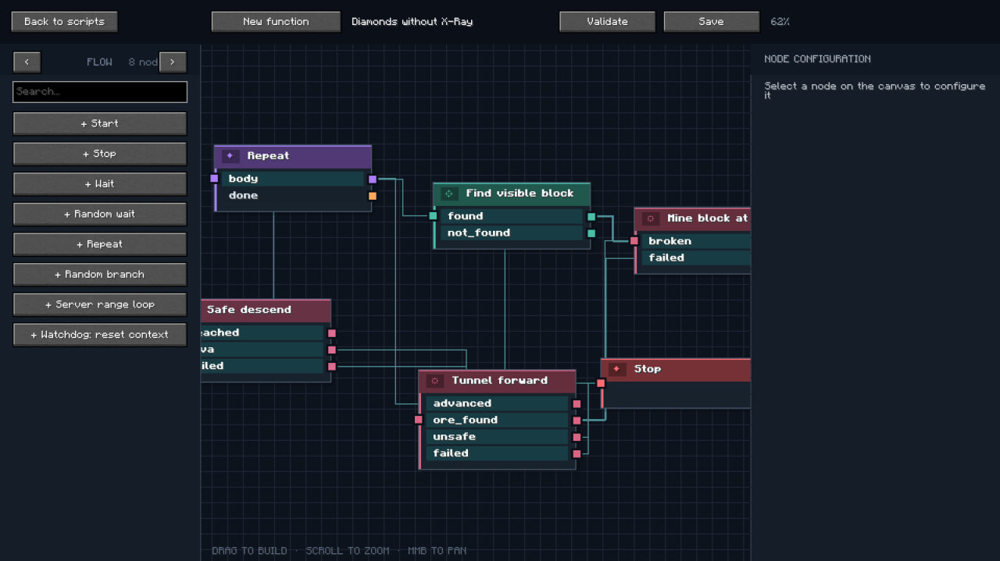
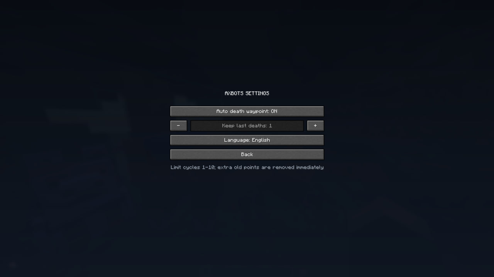

COMPOSE
Build with nodes
Connect triggers, conditions and actions into a readable flow.
A visual node-based automation system for creating intelligent agents that move, mine, build and act on your ideas.
For builders, creators and curious engineers. Early supporter access is $2.50/month.

01 / THE PRODUCT
Turn an idea into a working bot behavior by connecting readable actions on a visual canvas.
VISUAL BEHAVIOR SYSTEM
Build the logic, inspect the flow and understand exactly what your bot will do before it moves.

Connect triggers, conditions and actions into a readable flow.
Send the scenario into the world and let the bot follow its logic.
Adjust the graph, validate it and run the improved behavior again.
02 / CAPABILITIES
Everything in AxBOTS is designed around a simple idea: powerful automation should feel approachable.
Build behavior graphs with modular nodes instead of starting from a blank code editor.
↗Let bots carry out a plan, respond to the world and keep working while you focus elsewhere.
↗Movement, mining, building and other routines become composable building blocks.
↗Save, refine and eventually share behaviors that work across your projects and worlds.
↗03 / THE LOOP
Connect nodes into a behavior that matches your goal.
Set targets, conditions and the details that make it yours.
Start the agent and observe the plan becoming action.
Iterate on the graph until the behavior feels right.
04 / IN THE WORKSHOP
Explore the workflow, the editor and the controls behind an AxBOTS scenario.

05 / EARLY SUPPORT
Support the development of AxBOTS and get a front-row seat as the system takes shape.
06 / DIRECTION
Foundation
0.1 Beta
What we’re exploring
07 / THE STUDIO
Axis is an independent software studio exploring automation, intelligent agents and creative tools. AxBOTS is our first public experiment in making complex behavior feel tangible.
Follow Axis on Telegram08 / JOIN AXIS
We are building a small, independent team around automation, intelligent agents and creative software.
Talk to the manager09 / QUESTIONS
Beta access is for the evolving AxBOTS experience, including early builds, development updates and a place to share feedback. Exact feature availability will change as the system develops.
AxBOTS 0.1 BETA is built for Minecraft 1.21.11 on Fabric.
Yes. The early access support plan is intended to be cancellable through the payment platform at any time. Check the payment provider’s current terms for account-specific details.
The long-term distribution model is still being explored. Supporting the beta gives you access to the current early stage; it does not promise a specific future pricing model.